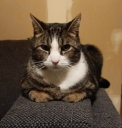

Ik ben Iris Barbot. Ik ben 23 jaar oud en ik ben in Parijs geboren op 28 september 1998. Daardoor spreek ik vlot Frans en Nederlands. Door mijn tweetalige opvoeding spreek ik ook vlot Engels. Momenteel studeer ik in de richting Systeem- en Netwerkbeheer op de campus Geel van Thomas More. Ik woon alleen en ik heb een kat.
Ik ben leergierig en leer graag dingen bij. Daarom ben ik terug gaan studeren. Ik ben ook heel nauwkeurig. Ik ben een doorzetter. Ik heb graag dat als ik iets doe ik er 100% voor kan gaan. Ik ben heel loyaal. Ik blijf bij de mensen wat er ook gebeurt met hun. Ik ben zelfstandig maar kan ook goed met andere werken. Als ik iets moet doen dan kan ik dat meestal zelf doen behalve als het iets is dat ik niet ken. Dan ga ik hulp vragen of zoek ik op hoe ik het moet doen. Ik ben heel gericht op rechtvaardigheid.
Ik ben vaak chaotisch. Ik kan mij met momenten moeilijk concentreren. Ik loop soms vast op mijn eigen denkwijze omdat het soms heel rigide kan zijn. Omdat ik heel zelfstandig ben kan dat ervoor zorgen dat ik geen hulp vraag en dat ik vaak alleen ben. Doordat ik graag rechtvaardigheid ben ik soms overgevoelig in situaties waarbij er onrechtvaardig is.